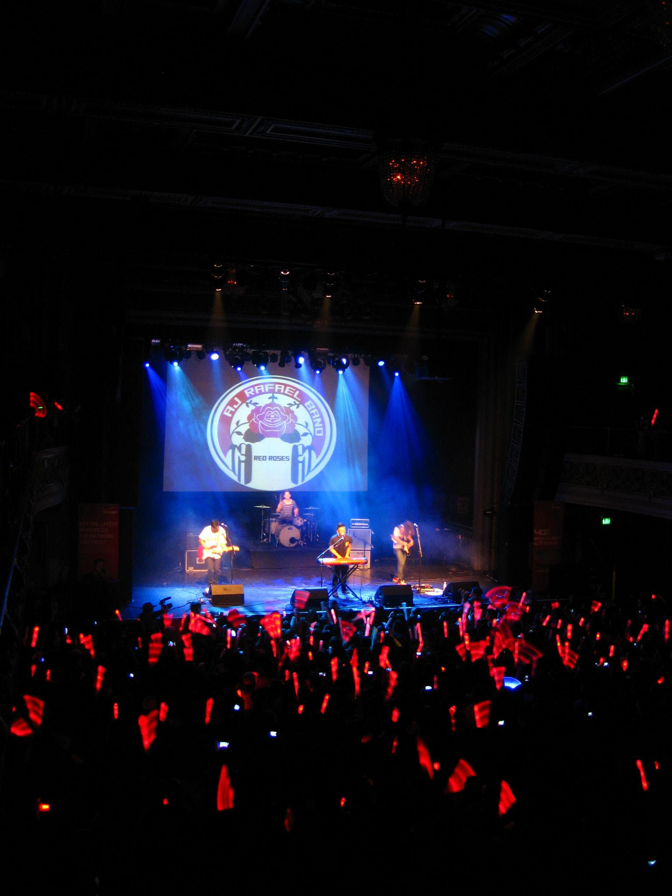
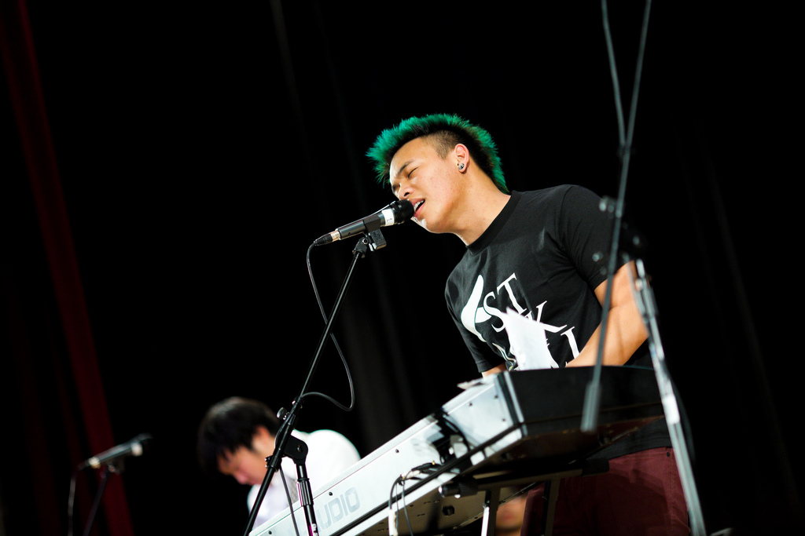
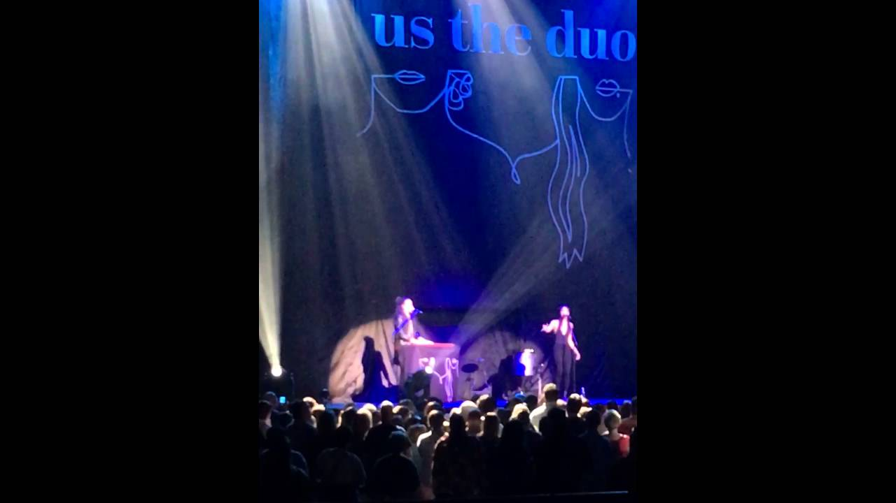

Music has always been my passion. I have been playing the piano since the age of 5 and the guitar and drums since the age of 12. Being a musician, one of my favorite things to do is to cover songs from famous artists. With personal experience, I know the difficulties of covering a song perfectly in pitch and melody so I get really amazed when I hear artists on Youtube who are able to cover a song well and even add their own flavor to the piece. My goal for this website is to highlight these artists that do not have the chance to appear on the radio or television and show their talent to the world. If there are any artists that are not shown on this website that you like, please find me on my social media links below and send me links to their covers. I will be more than happy to add these artists to the wesbsite!